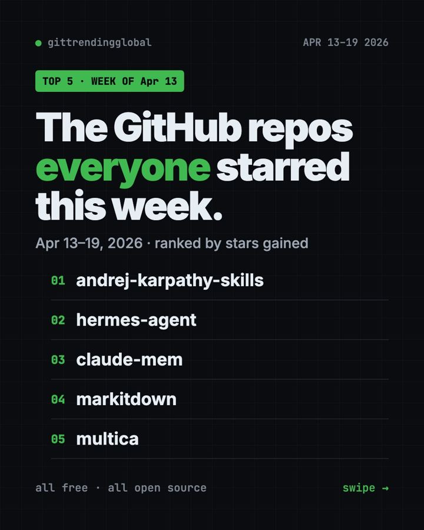
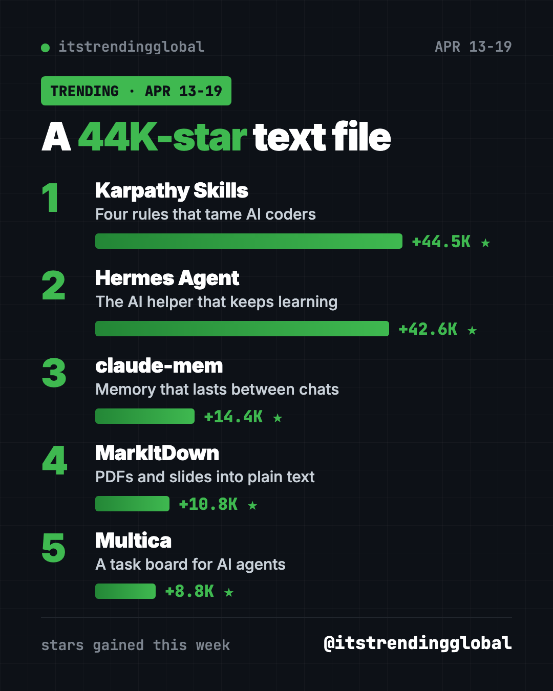
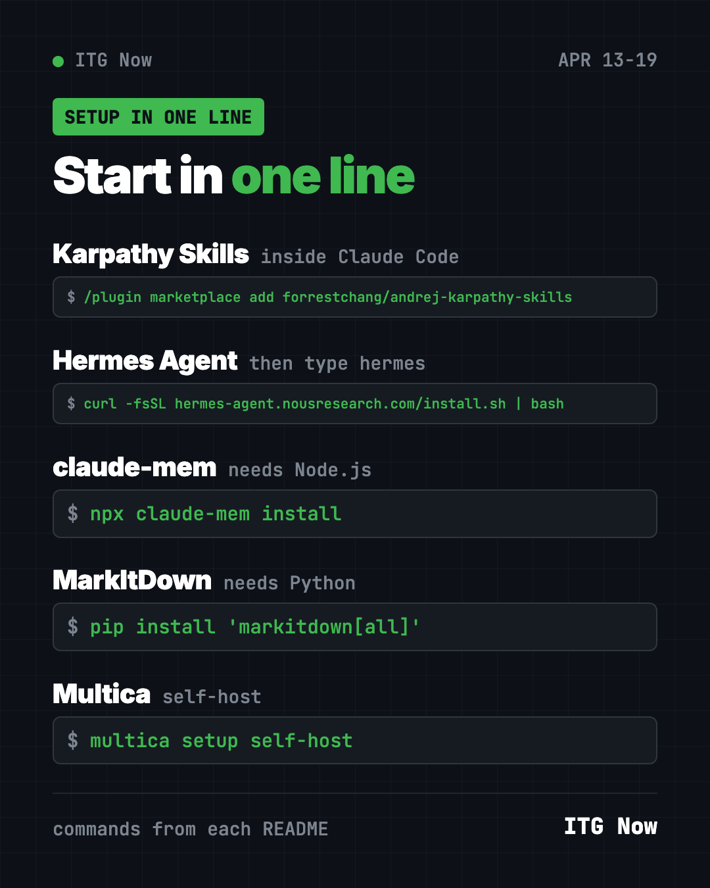

Home › Top repos › GitHub trending this week
GitHub Trending This Week April 13 2026: Top 5 Repos
GitHub trending this week April 13 2026: a 44K-star rules file, Hermes Agent, claude-mem memory, MarkItDown and Multica. Free tools in plain words.

GitHub trending this week April 13 2026 was a two-horse race. A single text file of AI coding rules, Karpathy Skills, gained about 44,500 stars. Hermes Agent was right behind it with about 42,600.
Then came claude-mem, which gives AI helpers a memory, plus MarkItDown and Multica back for a second week.
Key takeaways
- Karpathy Skills went from fifth to first. Four plain rules beat every app this week.
- Hermes Agent grew even faster than the week before, adding over 42,000 stars.
- claude-mem makes Claude remember past sessions, so you stop re-explaining your project.
- MarkItDown and Multica kept climbing for a second week.

The five, compared
| Repo | In one line | Best for | Stars this week | License |
|---|---|---|---|---|
| Karpathy Skills | Four rules that tame AI coders | Claude Code users | +44.5K | No license file listed |
| Hermes Agent | AI assistant that keeps learning | Anyone | +42.6K | MIT |
| claude-mem | Memory across AI chat sessions | Daily Claude Code users | +14.4K | Apache-2.0 |
| MarkItDown | PDFs and slides into plain text | Office workers, students | +10.8K | MIT |
| Multica | Task board for AI agents | Small teams | +8.8K | Apache-2.0 with extra terms |
Star gains cover April 13 to 19, 2026. Totals were checked on GitHub on October 16, 2026.
1. Karpathy Skills: a 44K-star text file
Stars: +44.5K this week · about 220K total now
What it is: One CLAUDE.md file. Claude Code reads it before each task. It turns Andrej Karpathy's well-known gripes about AI coders into four rules: think before coding, keep it simple, change only what you must, and define how you will know it worked.
Who it's for: Anyone tired of an AI helper that "fixes" things you never asked it to touch.
Everyday use: Ask Claude to fix one typo on your site. With the rules, it fixes the typo and leaves the rest alone.
Install it: Inside your project folder:
curl -o CLAUDE.md https://raw.githubusercontent.com/forrestchang/andrej-karpathy-skills/main/CLAUDE.md
Or ask your AI helper:
Download the CLAUDE.md from github.com/multica-ai/andrej-karpathy-skills into this project and follow it.
⚠️ Heads up: That command replaces any CLAUDE.md you already have. If you have one, paste the new rules at the bottom instead.
See Karpathy Skills on GitHub · Read our full guide
2. Hermes Agent: the assistant everyone tried
Stars: +42.6K this week · about 254K total now
What it is: Nous Research's free assistant that writes its own skills and remembers what worked. It runs in a terminal or in chat apps like Telegram, Discord and WhatsApp. You choose the AI model, and switching is one command.
Who it's for: People who want an assistant they own, not one locked to one company.
Everyday use: Ask it every Friday to back up a folder and send you a short report.
Install it:
curl -fsSL https://hermes-agent.nousresearch.com/install.sh | bash
hermes
Or ask your AI helper:
Install Hermes Agent from github.com/NousResearch/hermes-agent and schedule a weekly folder backup report.
See Hermes Agent on GitHub · Read our full guide
3. claude-mem: your AI stops forgetting
Stars: +14.4K this week · about 101K total now
What it is: A memory add-on for Claude Code and other AI helpers. It quietly notes what the AI does in each session, squeezes that into short summaries, and feeds the useful bits back next time.
Who it's for: People who use Claude Code daily on the same project.
Everyday use: Close your laptop on Friday. On Monday, Claude already knows where you left off.
Install it: You need Node.js.
npx claude-mem install
Or ask your AI helper:
Install claude-mem from github.com/thedotmack/claude-mem using the local option, without the hosted trial.
💡 Tip: The installer offers a hosted memory with a 30-day free trial. You can skip it and keep memory local; the README lists the flags for that.
4. MarkItDown: back for a second week
Stars: +10.8K this week · about 190K total now
What it is: Microsoft's free converter that turns PDF, Word, PowerPoint and Excel files into Markdown, a plain text format AI reads well.
Who it's for: Anyone who pastes documents into an AI chatbot.
Everyday use: Convert a slide deck to text and ask an AI to write speaker notes.
Install it:
pip install 'markitdown[all]'
markitdown slides.pptx -o slides.md
Or ask your AI helper:
Use MarkItDown from github.com/microsoft/markitdown to turn my slides.pptx into Markdown notes.
5. Multica: a task board for AI teammates
Stars: +8.8K this week · about 53K total now
What it is: A workspace where you assign issues to AI agents like Claude Code or Codex. They report progress and hand work back for review. You can run it on your own server.
Who it's for: Teams with more AI agents than they can keep track of.
Everyday use: Queue three small website fixes and review them over coffee.
Install it:
curl -fsSL https://raw.githubusercontent.com/multica-ai/multica/main/scripts/install.sh | bash -s -- --with-server
multica setup self-host
Or ask your AI helper:
Install Multica from github.com/multica-ai/multica on this machine and connect Claude Code as an agent.

Which one should you try first?
- Fastest win: Karpathy Skills. One file, no setup.
- Want an assistant in your chats: Hermes Agent.
- Use Claude Code every day: add claude-mem.
- Work with lots of documents: MarkItDown.
- Manage several agents: Multica.
For the full month, read the best GitHub repos of April 2026 and April 2026 in AI news. The week before is April 6 to 12; next is April 20 to 26.
FAQ
What was GitHub trending the week of April 13, 2026?
Karpathy Skills, Hermes Agent, claude-mem, MarkItDown and Multica, in that order by stars gained.
Why did a text file get 44,000 stars?
Because it fixes a common pain. Many people find AI coders overbuild and guess. Four clear rules help, and anyone can copy them in seconds.
Does claude-mem cost money?
The local version is free and open source. The installer also offers a hosted option with a free trial, which you can skip.
Can I use Hermes Agent without coding?
Mostly, yes. Install it with one line, then chat with it in plain words. Claude or Codex can run the setup for you.
Are all five free?
Yes. Some connect to paid AI models, which charge per use.
Want a new free tool explained every day? Follow @gittrendingglobal on Instagram.
📲 See this as a swipeable post on Instagram
Keep reading

Trending GitHub Repos October 2026: The Top 5 So Far
The trending GitHub repos of October 2026 so far: a free Photoshop-style editor, an AI art studio, a big AI model for gaming PCs and more, explained.

Trending GitHub Repos This Week, Oct 5 2026: The Top 5
Trending GitHub repos this week Oct 5 2026: Matt Pocock's skills, the openGym workout tracker, e2e testing, HyperFrames video and claude-mem memory.

GitHub Trending September 28, 2026: VoiceStudio Takes #1
GitHub trending September 28 2026: VoiceStudio, Hindsight, Paperclip, NVIDIA's OpenShell and a free 542-lesson AI course, with setup steps for each.